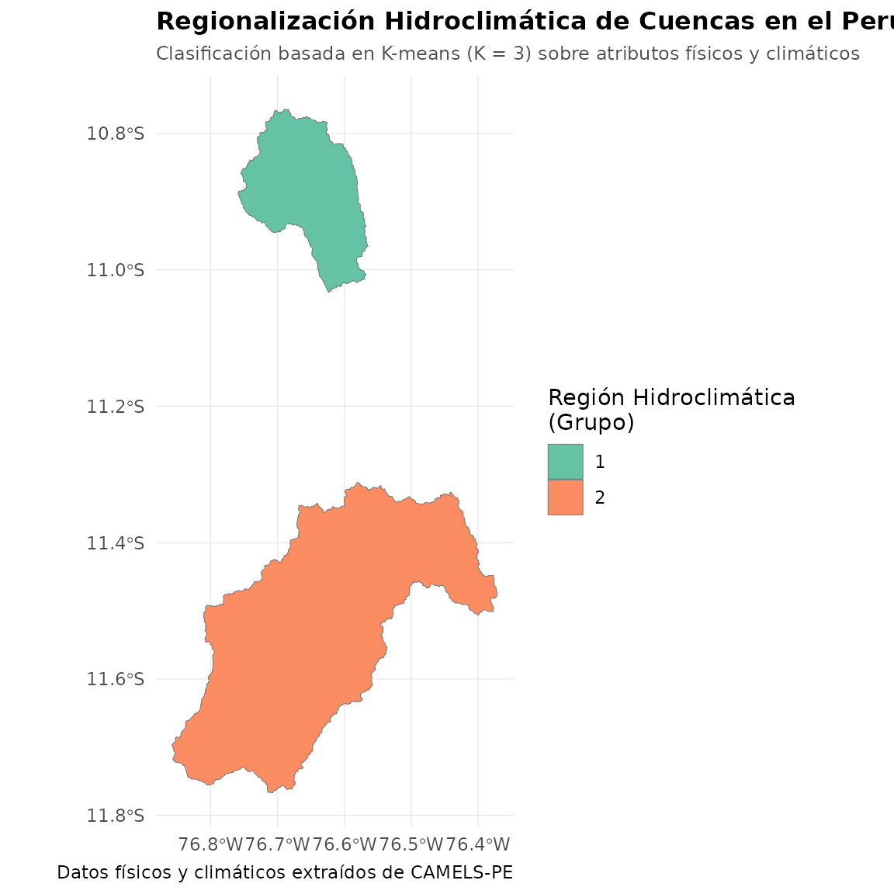

Regionalización Hidroclimática de Cuencas en el Perú
Source:vignettes/regionalization.Rmd
regionalization.RmdLa regionalización hidrológica es un procedimiento fundamental en la hidrología científica y aplicada. Su objetivo principal es clasificar cuencas hidrográficas en regiones homogéneas que comparten características físicas y climáticas similares. Esta técnica es de gran utilidad para:
- Estimación en cuencas no instrumentadas: Transferir parámetros de modelos o firmas hidrológicas desde cuencas con datos (donantes) hacia cuencas sin mediciones de caudal (receptoras).
- Comprensión del régimen de caudales: Identificar los principales factores físicos (pendiente, elevación) y climáticos (precipitación, aridez) que gobiernan la respuesta hidrológica regional.
Este tutorial muestra cómo utilizar el paquete rcamelspe
para cargar atributos climáticos y topográficos, clasificar las 136
cuencas del Perú utilizando un algoritmo de agrupamiento
(K-means), y mapear las regiones resultantes.
1. Carga de Librerías y Configuración
Primero, cargamos el paquete rcamelspe junto con
ggplot2 y sf para el manejo espacial y la
visualización.
library(rcamelspe)
library(ggplot2)
library(sf)
# Configurar la ruta al dataset CAMELS-PE si está disponible localmente
# Buscamos rutas relativas comunes en el espacio de trabajo
path <- "raw-data/CAMELS-PE"
if (dir.exists(path)) {
set_camels_pe_path(path)
} else if (dir.exists("../raw-data/CAMELS-PE")) {
set_camels_pe_path("../raw-data/CAMELS-PE")
} else if (dir.exists("../../raw-data/CAMELS-PE")) {
set_camels_pe_path("../../raw-data/CAMELS-PE")
}2. Preparación y Carga de Datos
Cargamos de forma eficiente los atributos físicos de interés y los límites geoespaciales de las cuencas. Utilizaremos variables climáticas y topográficas clave:
-
Física/Topografía: Área de la cuenca
(
area), elevación media (elev_mean) y pendiente media (slope_mean). -
Clima: Precipitación media diaria
(
p_mean) y el índice de aridez (aridity).
# Verificar si el dataset está disponible antes de ejecutar
has_data <- !is.null(get_camels_pe_path()) && dir.exists(get_camels_pe_path())
if (has_data) {
# Cargar atributos topográficos y climáticos mezclados por gauge_id
attrs <- load_pe_attributes(attributes = c("topographic", "climatic"))
# Cargar geometrías vectoriales de las cuencas (polígonos GPKG)
catchments <- load_pe_geospatial(type = "catchments")
# Seleccionar las variables numéricas para el análisis
clustering_vars <- c("area", "elev_mean", "slope_mean", "p_mean", "aridity")
# Filtrar registros completos
data_clustering <- attrs[, c("gauge_id", clustering_vars)]
data_clustering <- na.omit(data_clustering)
# Vista rápida de los atributos cargados
head(data_clustering)
}
#> gauge_id area elev_mean slope_mean p_mean aridity
#> 1 PE_110139 360.584 4534.981 3.902 2.062 1.544
#> 2 PE_111151 1263.804 3542.298 22.799 1.504 2.1493. Preprocesamiento y Agrupamiento (Clustering K-means)
Dado que las variables físicas y climáticas tienen unidades y rangos drásticamente diferentes (por ejemplo, el área en vs el índice de aridez que es adimensional), debemos escalar (estandarizar) los datos para que tengan media igual a 0 y desviación estándar de 1.
Posteriormente, aplicamos el algoritmo clásico de particionamiento K-means seleccionando grupos para identificar tres macrorregiones hidroclimáticas representativas en el Perú.
if (has_data) {
# Estandarizar atributos
scaled_data <- scale(data_clustering[, clustering_vars])
# Ejecutar algoritmo K-means si hay suficientes cuencas, o partición adaptativa
set.seed(123) # Para reproducibilidad
if (nrow(data_clustering) >= 3) {
k_centers <- min(3, nrow(data_clustering))
kmeans_res <- kmeans(scaled_data, centers = k_centers, nstart = 25)
data_clustering$region <- as.factor(kmeans_res$cluster)
} else {
data_clustering$region <- as.factor(seq_len(nrow(data_clustering)))
}
# Contar cuántas cuencas pertenecen a cada región
table(data_clustering$region)
}
#>
#> 1 2
#> 1 14. Unión Geoespacial de Resultados
Unimos nuestros resultados de regionalización con los límites
geográficos de las cuencas. Aprovechamos la función de alto rendimiento
collapse::join() para acelerar el proceso y nos aseguramos
de preservar la clase de objeto geoespacial sf.
if (has_data) {
# Realizar un Left Join rápido entre el objeto espacial y los resultados de clustering
catchments_regions <- collapse::join(
catchments,
data_clustering[, c("gauge_id", "region")],
on = "gauge_id",
how = "left"
)
# Forzar a sf si collapse limpió los atributos espaciales
if (!inherits(catchments_regions, "sf")) {
catchments_regions <- sf::st_as_sf(catchments_regions)
}
}
#> left join: catchments[gauge_id] 2/2 (100%) <1:1st> y[gauge_id] 2/2 (100%)5. Visualización de las Regiones Hidroclimáticas
Finalmente, graficamos el mapa temático de las cuencas hidrográficas coloreándolas de acuerdo a la región a la que fueron asignadas por el algoritmo.
ggplot(catchments_regions) +
geom_sf(aes(fill = region), color = "grey40", linewidth = 0.15) +
scale_fill_brewer(palette = "Set2", name = "Región Hidroclimática\n(Grupo)") +
labs(
title = "Regionalización Hidroclimática de Cuencas en el Perú",
subtitle = "Clasificación basada en K-means (K = 3) sobre atributos físicos y climáticos",
caption = "Datos físicos y climáticos extraídos de CAMELS-PE",
x = NULL,
y = NULL
) +
theme_minimal() +
theme(
plot.title = element_text(face = "bold", size = 12),
plot.subtitle = element_text(color = "grey30", size = 9),
legend.position = "right",
panel.grid.major = element_line(color = "grey90", linewidth = 0.2)
)
6. Interpretación de las Regiones Hidroclimáticas
Para entender qué representa cada clúster, podemos resumir el promedio de los atributos físicos y climáticos para cada grupo identificado:
if (has_data) {
# Calcular promedios grupales utilizando collapse::collap
resumen_regiones <- collapse::collap(
data_clustering[, c("region", clustering_vars)],
by = ~region,
FUN = mean
)
print(resumen_regiones)
}
#> region area elev_mean slope_mean p_mean aridity
#> 1 1 360.584 4534.981 3.902 2.062 1.544
#> 2 2 1263.804 3542.298 22.799 1.504 2.149- Región 1: Cuencas con menor precipitación media y alta aridez (típicamente asociadas a la vertiente árida del Pacífico).
- Región 2: Cuencas de gran altitud y pendientes pronunciadas (zonas andinas de cabecera de cuenca).
- Región 3: Cuencas con altas precipitaciones y menor aridez (regiones húmedas de la vertiente del Atlántico/Amazonía).